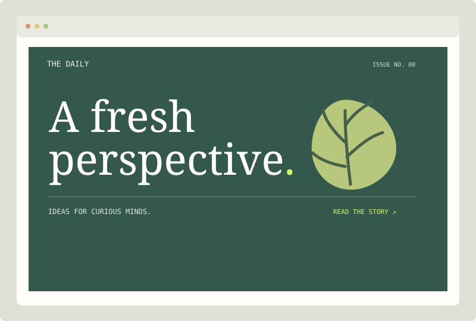

PROJECT 01 / LAYOUT · RESPONSIVE
A digital magazine
Design a landing page for an independent magazine, journal, or local newsletter. Give a featured story a strong point of view and help readers find the next thing to explore.
The brief
Create a responsive editorial homepage with a masthead, navigation, lead story, supporting article cards, and a simple footer. Write original sample headlines and use images you created, licensed, or can clearly credit.
Skills to practice
- Semantic header, navigation, main, article, and footer elements.
- Grid or Flexbox for a flexible article layout.
- Responsive type, image cropping, and intentional whitespace.
- Accessible image alternatives and clear link labels.
IMAGE DETAIL
Review the HTML guide
The preview is a custom illustration, not a finished website screenshot. Treat its colors and composition as an art direction reference—not a requirement to copy.